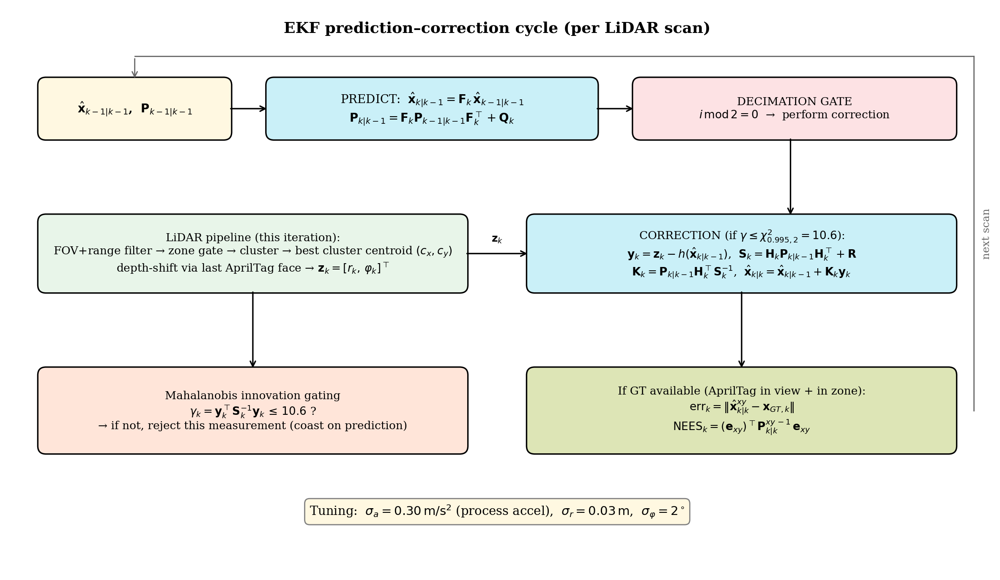
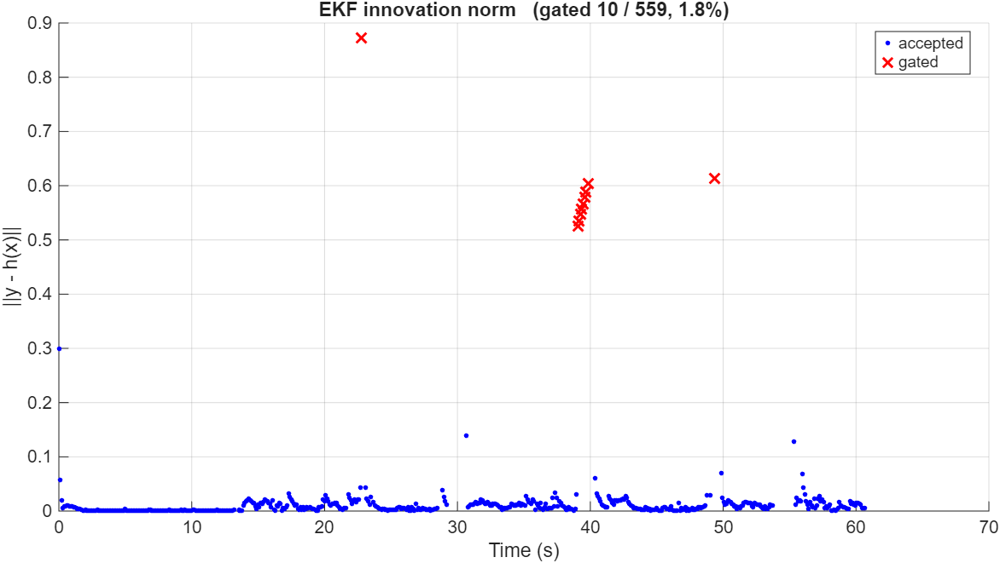
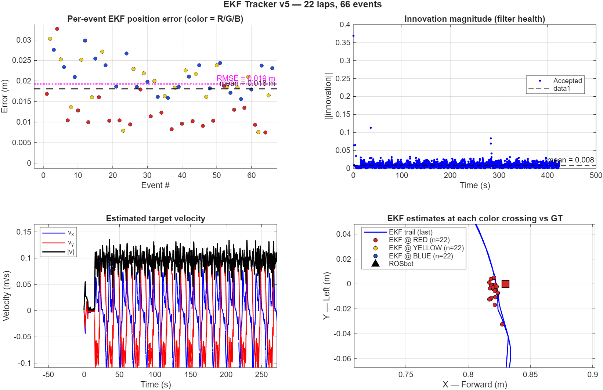
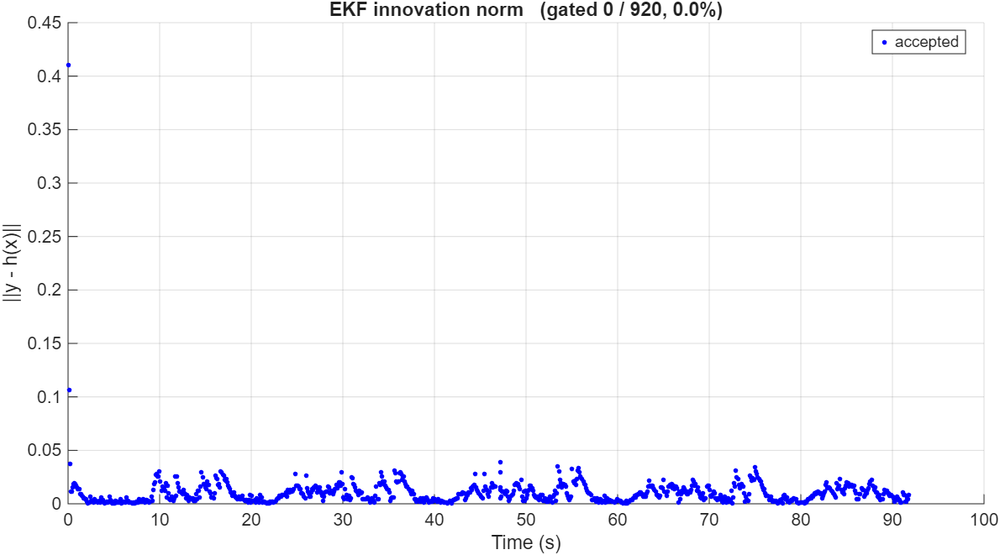

Suivi de cible par EKF : LiDAR 2D et vérité terrain AprilTag EKF target tracking: 2D LiDAR and AprilTag ground truth
Fusion LiDAR / caméra sur un ROSbot 3 Pro : un filtre de Kalman étendu suit un mBot2 mobile, évalué en continu par des marqueurs AprilTag. Travail réalisé au laboratoire TéSA / IPSA (Toulouse). LiDAR / camera fusion on a ROSbot 3 Pro: an extended Kalman filter tracks a moving mBot2, continuously evaluated with AprilTag markers. Work carried out at the TéSA / IPSA laboratory (Toulouse).
1. Le problème1. The problem
Suivre un objet mobile dans son voisinage est un prérequis de nombreuses applications en robotique mobile : évitement de collision, convois leader-suiveur, coordination multi-robots, suivi de personne. Quand l'observation vient d'un LiDAR 2D, le traqueur doit composer avec des mesures éparses et bruitées à environ 10 Hz, sans aucune information d'identité dans les retours, et sur une seule coupe plane de l'environnement. Le filtre de Kalman étendu (EKF) est la solution canonique. Tracking a moving object nearby is a prerequisite for countless mobile-robotics applications: collision avoidance, leader-follower platoons, multi-robot coordination, person following. When the observation comes from a 2D LiDAR, the tracker must cope with sparse, noisy measurements at about 10 Hz, no identity information in the returns, and a single planar slice of the environment. The extended Kalman filter (EKF) is the canonical solution.
Le plus difficile est d'évaluer un tel traqueur quantitativement. Plutôt qu'un simulateur ou un système de capture de mouvement, nous fixons une petite boîte couverte de marqueurs AprilTag sur la cible et l'observons avec la caméra RGB de l'observateur : la pose du tag retrouvée par la caméra fournit une vérité terrain continue, sans dérive, en unités métriques réelles. Deux défis ont dû être résolus : le mBot2 est trop bas pour être vu par le LiDAR (d'où une boîte de 115 mm × 85 mm posée dessus, à hauteur du plan LiDAR, avec un tag différent par face), et le centroïde LiDAR se trouve sur la surface visible de la boîte, pas en son centre géométrique, ce qui impose une correction de profondeur dépendant de la face que la caméra voit. The hard part is evaluating such a tracker quantitatively. Instead of a simulator or a motion-capture system, we attach a small box covered with AprilTag markers to the target and observe it with the observer's RGB camera: the camera-recovered tag pose provides continuous, drift-free ground truth in real metric units. Two challenges had to be solved: the mBot2 is too low for the LiDAR to see (hence a 115 mm × 85 mm box placed on top, at the height of the LiDAR plane, with a different tag on each face), and the LiDAR centroid lies on the visible surface of the box, not at its geometric centre, which requires a depth-shift correction that depends on the face the camera currently sees.
2. Dispositif expérimental2. Experimental setup
- Observateur : ROSbot 3 Pro (Husarion) avec un LiDAR RPLIDAR S2 (portée 30 m, résolution angulaire 0,05°, 10 Hz) et une caméra OAK-D Pro (flux RGB en 768 × 432). Observer: ROSbot 3 Pro (Husarion) with an RPLIDAR S2 LiDAR (30 m range, 0.05° angular resolution, 10 Hz) and an OAK-D Pro camera (RGB stream at 768 × 432).
- Cible : mBot2 (Makeblock) exécutant son programme suiveur de ligne sur une boucle fermée imprimée. Target: mBot2 (Makeblock) running its line-follower program on a printed closed loop.
- Aide à la visibilité : une boîte en carton (L = 115 mm, W = 85 mm) portant quatre tags Tag36h11 (ids 0 à 3, bord noir de 61,5 mm), un par face : les tags 0 et 2 sur les côtés courts, 1 et 3 sur les côtés longs. Visibility aid: a cardboard box (L = 115 mm, W = 85 mm) carrying four Tag36h11 tags (ids 0 to 3, 61.5 mm black border), one per face: tags 0 and 2 on the short sides, 1 and 3 on the long sides.
Un rosbag ROS 2 d'environ 90 secondes enregistre /scan_filtered,
/oak/rgb/image_raw, /oak/rgb/camera_info et
/tf_static, puis le script MATLAB lidar_camera_tracker.m
traite l'enregistrement hors ligne, de façon déterministe et rejouable. Les deux
chaînes de transformations statiques (base vers LiDAR, base vers caméra optique) sont
résolues depuis /tf_static pour exprimer toutes les mesures dans le
repère base_link.
A ROS 2 rosbag of about 90 seconds records /scan_filtered,
/oak/rgb/image_raw, /oak/rgb/camera_info and
/tf_static, then the MATLAB script lidar_camera_tracker.m
processes the recording offline, deterministically and repeatably. The two static
transform chains (base to LiDAR, base to optical camera frame) are resolved from
/tf_static to express all measurements in the base_link
frame.
3. Pipeline LiDAR : du scan brut à la mesure3. LiDAR pipeline: from raw scan to measurement
Chaque scan (environ 1080 retours polaires) est converti en points cartésiens dans
base_link, puis filtré par trois portes successives : une porte de
distance (0,15 m à 2,0 m, qui élimine la zone aveugle du LiDAR et les murs de la
pièce), une porte de champ de vision (± 30° vers l'avant) et une zone de détection
rectangulaire ([0,20 ; 1,60] × [-0,60 ; 0,60] m) dimensionnée sur le circuit imprimé.
Les points survivants sont regroupés par clustering spatial à lien simple dans
l'ordre angulaire du scan : deux points consécutifs appartiennent au même cluster si
leur distance est inférieure à 0,5 m. Les clusters de moins de 15 points ou d'étendue
hors de [3 ; 25] cm sont rejetés.
Each scan (about 1080 polar returns) is converted to Cartesian points in
base_link, then filtered by three successive gates: a range gate
(0.15 m to 2.0 m, removing the LiDAR blind zone and the room walls), a field-of-view
gate (± 30° forward) and a rectangular detection zone ([0.20, 1.60] × [-0.60, 0.60] m)
sized around the printed track. Surviving points are grouped by single-link spatial
clustering in scan-angular order: two consecutive points belong to the same cluster
if they are less than 0.5 m apart. Clusters with fewer than 15 points or an extent
outside [3, 25] cm are rejected.
Quand plusieurs clusters survivent, le script choisit celui qui minimise un score combinant la distance à la position prédite par l'EKF (terme dominant, qui joue le rôle d'association de données) et un écart de taille à une étendue cible de 0,20 m. Le centroïde gagnant est ensuite corrigé du décalage de profondeur : le LiDAR ne voit que la face la plus proche de la boîte, donc on pousse le point mesuré vers l'intérieur de W/2 ou L/2 selon la face que la caméra a vue en dernier. La mesure finale est en forme distance-gisement : When several clusters survive, the script picks the one minimizing a score that combines the distance to the EKF-predicted position (the dominant term, which acts as data association) and a size mismatch to a 0.20 m target extent. The winning centroid is then corrected by the depth shift: the LiDAR only sees the closest face of the box, so the measured point is pushed inward by W/2 or L/2 depending on the face the camera last saw. The final measurement is in range-bearing form:
4. Vérité terrain par AprilTag4. AprilTag ground truth
À chaque itération, l'image caméra la plus récente est traitée par
readAprilTag : le détecteur résout un problème PnP
(Perspective-n-Point) sur les quatre coins du tag, de taille métrique connue, et
retourne la pose 3D complète du tag dans le repère caméra, sans aucune
infrastructure externe. Chaque détection reçoit un score d'obliquité (produit
scalaire entre la normale du tag et la direction caméra-tag) ; en dessous de 0,3
(incidence supérieure à environ 72,5°), le PnP devient mal conditionné et la
détection est rejetée. Le tag le mieux vu gagne, sa position est décalée de la
demi-profondeur de la boîte le long de sa normale pour obtenir le centre géométrique,
puis exprimée dans base_link via la chaîne TF. L'identifiant de la face
gagnante est aussi mémorisé pour la correction de profondeur du LiDAR.
At every iteration, the most recent camera frame is processed by
readAprilTag: the detector solves a PnP (Perspective-n-Point) problem
on the tag's four corners, whose metric size is known, and returns the tag's full 3D
pose in the camera frame, with no external infrastructure. Each detection gets an
obliquity score (dot product between the tag normal and the camera-to-tag
direction); below 0.3 (incidence beyond about 72.5°), PnP becomes ill-conditioned
and the detection is rejected. The best-seen tag wins, its position is shifted by
the box half-depth along its normal to get the geometric centre, then expressed in
base_link through the TF chain. The winning face id is also cached for
the LiDAR depth-shift correction.
5. Le filtre de Kalman étendu5. The extended Kalman filter
L'état est un modèle à vitesse constante à 4 composantes dans le plan, xk = [x, y, ẋ, ẏ]T. La prédiction utilise la matrice de transition classique et un bruit de processus de type accélération blanche discrète (DWNA) d'écart-type σa = 0,15 m/s², calibré sur environ deux fois l'accélération centripète maximale du mBot2 dans ses virages : The state is a 4-component constant-velocity model in the plane, xk = [x, y, ẋ, ẏ]T. The prediction uses the classical transition matrix and a discrete white-noise acceleration (DWNA) process noise with standard deviation σa = 0.15 m/s², calibrated to about twice the mBot2's maximum centripetal acceleration in its turns:
La fonction de mesure h(x) = [r, φ]T étant non linéaire, elle est linéarisée autour de l'état prédit ; sa jacobienne Hk ne dépend que de la position prédite. La correction suit les formules canoniques (innovation, covariance d'innovation S, gain K, mise à jour de x̂ et P), avec le bruit de mesure R = diag(σr², σφ²), σr = 3 cm et σφ = 1,5°. Détail important : l'innovation de gisement est rebouclée dans [-π, π] avant usage, sans quoi une cible proche de la direction de référence angulaire produirait une correction aberrante de 2π. Since the measurement function h(x) = [r, φ]T is nonlinear, it is linearized around the predicted state; its Jacobian Hk depends only on the predicted position. The correction follows the canonical formulas (innovation, innovation covariance S, gain K, update of x̂ and P), with measurement noise R = diag(σr², σφ²), σr = 3 cm and σφ = 1.5°. One important detail: the bearing innovation is wrapped into [-π, π] before use, otherwise a target near the angular reference direction would produce a spurious 2π correction.

6. Gating d'innovation par test du chi-carré6. Innovation gating with the chi-square test
Tel quel, l'EKF absorbe toute mesure qu'on lui donne : une personne traversant la zone de détection ou une réflexion parasite tirerait l'estimation vers elle, avec plusieurs scans de récupération ensuite. La porte d'innovation refuse ces mesures pathologiques avant qu'elles ne corrompent l'état. On forme la distance de Mahalanobis au carré : As written, the EKF absorbs any measurement it is given: a person walking through the detection zone or a stray reflection would pull the estimate toward it, with several scans of recovery afterwards. The innovation gate refuses such pathological measurements before they corrupt the state. We form the squared Mahalanobis distance:
Sous l'hypothèse d'un modèle de bruit correct, l'innovation est gaussienne centrée de covariance Sk, donc γk suit une loi du chi-carré à 2 degrés de liberté (la dimension de la mesure). Le seuil se calibre alors directement sur un taux de faux rejet : le script utilise 10,6, le quantile à 99,5 %, soit une mesure légitime rejetée sur 200. Ce choix conservateur reflète un coût asymétrique : accepter une mauvaise mesure coûte plusieurs scans de récupération, en rejeter une bonne fait seulement coaster le filtre sur sa prédiction pendant 100 ms. Le taux de rejet observé est lui-même un diagnostic : bien au-dessus de 0,5 %, les données sont contaminées ou le filtre est trop confiant ; proche de 0,5 %, tout va bien ; bien en dessous (y compris exactement zéro), les données sont propres ou le filtre est sous-confiant. Under the hypothesis of a correct noise model, the innovation is zero-mean Gaussian with covariance Sk, so γk follows a chi-square law with 2 degrees of freedom (the measurement dimension). The threshold can then be calibrated directly to a false-rejection rate: the script uses 10.6, the 99.5% quantile, i.e. one legitimate measurement rejected in 200. This conservative choice reflects an asymmetric cost: accepting one bad measurement costs several scans of recovery, rejecting a good one only makes the filter coast on its prediction for 100 ms. The observed gating rate is itself a diagnostic: well above 0.5%, the data is contaminated or the filter is over-confident; near 0.5%, all is well; well below (including exactly zero), the data is clean or the filter is under-confident.

7. Résultats7. Results
L'analyse porte sur environ 92 secondes de mouvement du mBot2 sur sa boucle, soit 920 itérations avec 908 échantillons de vérité terrain (98,7 % de couverture) : The analysis covers about 92 seconds of mBot2 motion along its loop, i.e. 920 iterations with 908 ground-truth samples (98.7% coverage):
| MétriqueMetric | ValeurValue |
|---|---|
| Erreur moyenneMean error | 1,57 cm |
| Erreur médianeMedian error | 1,43 cm |
| RMSE | 1,82 cm |
| Erreur maximale (transitoire initial)Maximum error (initial transient) | 9,28 cm |
| ANEES | 1,69 (cible ~2, IC 95 % : [1,87 ; 2,13])1.69 (target ~2, 95% CI: [1.87, 2.13]) |
| Corrections rejetées par la porteGated corrections | 0 / 920 (0,0 %) |
Une RMSE de 1,8 cm est un très bon résultat pour un traqueur plan alimenté par un LiDAR 2D à 10 Hz. Le transitoire initial d'environ 9 cm est l'amorçage du filtre depuis son état initial arbitraire ; il disparaît en une seconde. Au-delà de la précision, la cohérence du filtre est vérifiée par le NEES (erreur quadratique normalisée par la covariance annoncée) : l'ANEES de 1,69, juste sous la bande de confiance, indique un filtre légèrement sous-confiant, c'est-à-dire que ses erreurs réelles sont un peu plus petites que ce que sa covariance annonce. C'est le mode de défaillance souhaitable : l'incertitude publiée reste une borne supérieure valide. Un réglage antérieur (σa = 0,30 m/s²) donnait un ANEES de 0,64, bien plus éloigné ; diviser σa par deux l'a ramené à 1,69. Le taux de rejet exactement nul (au lieu des ~5 rejets attendus sur 920) confirme ce léger excès de prudence, en accord avec le diagnostic ANEES. An RMSE of 1.8 cm is a very good result for a planar tracker fed by a 2D LiDAR at 10 Hz. The initial transient of about 9 cm is the filter's burn-in from its arbitrary initial state; it dies out within a second. Beyond accuracy, the filter's consistency is checked with the NEES (estimation error normalized by the claimed covariance): the ANEES of 1.69, just below the confidence band, indicates a slightly under-confident filter, meaning its actual errors are a bit smaller than its covariance claims. That is the desirable failure mode: the published uncertainty remains a valid upper bound. An earlier tuning (σa = 0.30 m/s²) gave an ANEES of 0.64, much further off; halving σa brought it to 1.69. The exactly-zero gating rate (instead of the ~5 expected rejections out of 920) confirms this slight excess of caution, in agreement with the ANEES diagnostic.


8. Discussion et limites8. Discussion and limitations
Le choix de conception le plus important a été de placer une vérité terrain AprilTag continue dans la même scène que la mesure LiDAR : cela supprime le besoin de capture de mouvement sans sacrifier la comparaison, la précision de pose des tags à ces distances étant sub-centimétrique. La correction de profondeur est ce qui couple les deux capteurs : le LiDAR voit la face la plus proche, l'AprilTag dit laquelle, et la géométrie de la boîte traduit du centroïde de surface au centre géométrique. C'est une petite instance de fusion de capteurs au niveau métrique. Parmi les limites : l'hypothèse de vitesse constante suffit pour le mBot2 sur une ligne douce, mais un modèle à taux de virage constant suivrait mieux les virages serrés ; la correction de profondeur utilise l'axe du corps comme approximation du cap, ce qui introduit un biais d'environ 1 cm en virage ; et la pose PnP est biaisée à forte obliquité, ce que la stéréo de l'OAK-D Pro pourrait corriger. The single most important design choice was to put continuous AprilTag ground truth in the same scene as the LiDAR measurement: it removes the need for motion capture without sacrificing the comparison, since tag pose accuracy at these distances is sub-centimetre. The depth-shift correction is what couples the two sensors: the LiDAR sees the closest face, the AprilTag says which one it is, and the box geometry translates from the surface centroid to the geometric centre. It is a small instance of sensor fusion at the metric level. Among the limitations: the constant-velocity assumption suffices for the mBot2 on a smooth line, but a constant-turn-rate model would track tight corners better; the depth shift uses the body axis as a heading proxy, introducing a bias of about 1 cm in turns; and the PnP pose is biased at high obliquity, which the OAK-D Pro's stereo data could correct.
Une variante robuste de ce traqueur (RI-EKF avec M-estimateur de Tukey, d'après Belles et al. 2023) a également été implémentée et testée sur des données volontairement bruitées ; elle remplace la porte dure par une repondération itérative des résidus de mesure. A robust variant of this tracker (RI-EKF with a Tukey M-estimator, after Belles et al. 2023) was also implemented and tested on deliberately noisy data; it replaces the hard gate with an iteratively reweighted treatment of the measurement residuals.
← Retour aux projets← Back to projects